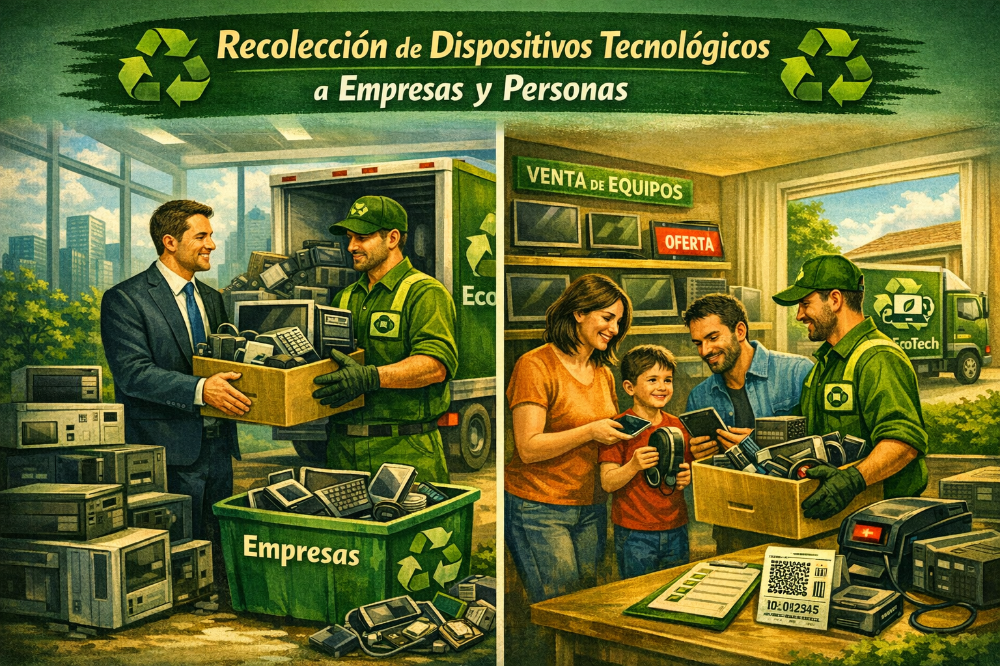

Recolección de RAEE

Desarrollamos un servicio especializado de recolección de residuos de aparatos eléctricos y electrónicos (RAEE), diseñado para garantizar una gestión segura, eficiente y ambientalmente responsable desde el punto de origen. Nuestro enfoque abarca hogares, empresas e instituciones que requieren una solución confiable.
El proceso inicia con la identificación y clasificación de dispositivos —computadores, celulares, impresoras, servidores y periféricos— seguido de una logística optimizada que reduce tiempos, costos operativos y emisiones asociadas al transporte.
Como valor agregado, otorgamos documentación y certificación del proceso de recolección, garantizando trazabilidad inicial y respaldo ante auditorías ambientales.